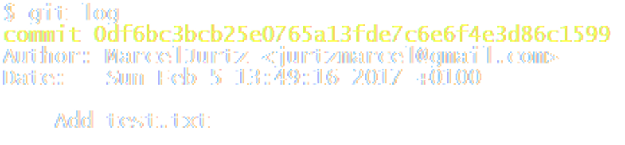

Git is open source software for distributed source code control, initiated by Linus Torvalds
git init
git status
git add file.txt
git commit -m "update file.txt"
git log

git config --global user.name "Marcel Jurtz"
git config --global user.email jurtzmarcel@gmail.com
Presentation built with reveal.js